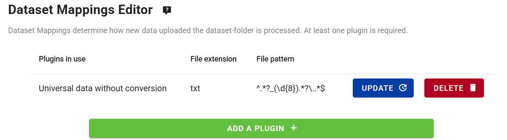

Configuración de un conjunto de datos recomendado
Resultados de aprendizaje
Al final de esta sesión práctica, serás capaz de:
- crear un nuevo conjunto de datos con la política de datos 'recommended'
- agregar un token de acceso al conjunto de datos
- validar que el conjunto de datos no puede ser accedido sin el token de acceso
- agregar el token de acceso a los encabezados HTTP para acceder al conjunto de datos
- agregar un archivo de licencia personalizado alojado en tu instancia de wis2box
Introducción
Los datos se comparten en WIS2 de acuerdo con la Política Unificada de Datos de la OMM, que define dos categorías de datos.
core: datos que se proporcionan de forma gratuita y sin restricciones, sin costo y sin condiciones de uso.
recommended: datos que pueden proporcionarse con condiciones de uso y/o sujetos a una licencia.
Los datos que se comparten como 'recommended':
- pueden estar sujetos a condiciones de uso y reutilización
- pueden tener controles de acceso aplicados a los datos
- no son almacenados en caché por los WIS2 Global Caches
- deben tener un registro de metadatos que incluya una URL de licencia
Descarga de datos recomendados
Dado que los WIS Global Caches no almacenan en caché los datos recomendados, no verás notificaciones en el tema cache/a/wis2/<centre-id>/data/recommended/..
El consumidor de datos debe descargar los datos desde el servidor de datos alojado por el proveedor de datos, utilizando la URL canónica proporcionada en las notificaciones en el tema origin/a/wis2/<centre-id>/data/recommended/...
En esta sesión práctica, crearás un nuevo conjunto de datos con la política de datos 'recommended' utilizando el editor de conjuntos de datos en wis2box-webapp. También aprenderás cómo proporcionar una licencia autoalojada y cómo agregar opcionalmente un control de acceso.
Datos de aviación en WIS2
Para este ejercicio, se te pedirá que crees un conjunto de datos para compartir datos METAR, un formato estándar para informar observaciones meteorológicas de aviación.
Los datos de aviación en WIS2 siempre deben compartirse como 'recommended' para alinearse con las regulaciones para compartir datos de aviación especificadas por la Organización de Aviación Civil Internacional (ICAO).
Preparación
Asegúrate de tener acceso SSH a tu máquina virtual de estudiante y que tu instancia de wis2box esté en funcionamiento.
Asegúrate de estar conectado al broker MQTT de tu instancia de wis2box utilizando MQTT Explorer. Puedes usar las credenciales públicas everyone/everyone para conectarte al broker.
Asegúrate de tener un navegador web abierto con el wis2box-webapp de tu instancia accediendo a http://YOUR-HOST/wis2box-webapp.
Crear un nuevo conjunto de datos con la política de datos 'recommended'
Ve a la página 'dataset editor' en el wis2box-webapp y crea un nuevo conjunto de datos.
Para "Centre ID", utiliza el mismo que usaste en las sesiones prácticas anteriores.
Selecciona Template = 'other' para indicar que no usarás una plantilla predefinida para el conjunto de datos:

Haz clic en 'CONTINUE TO FORM' para continuar.
Para este ejercicio, crea un conjunto de datos para datos de aviación METAR;
- elige un 'Local ID' apropiado para el conjunto de datos, por ejemplo, 'aviation-metar'
- proporciona un título y una descripción para el conjunto de datos
- elige WMO Data Policy = 'recommended'

Ten en cuenta que cuando seleccionaste WMO Data Policy = 'recommended', el editor de conjuntos de datos agregó automáticamente un campo para 'License URL', que es obligatorio para los conjuntos de datos recomendados.
A continuación:
- Usa
WIS2BOX_URL/data/aviation-license.htmlpara apuntar a un archivo de licencia personalizado alojado en tu instancia, reemplazandoWIS2BOX_URLcon la URL de tu instancia de wis2box. - Selecciona 'Sub Disciple Topic' = 'aviation/metar' para definir el tema correcto para este conjunto de datos.

Acerca de la URL de la licencia
La URL de la licencia asociada con un conjunto de datos recomendado informa a los consumidores de datos sobre las condiciones de uso de los datos.
Puedes usar una URL que apunte a un archivo de licencia alojado en tu instancia de wis2box, o puedes usar una URL que apunte a un archivo de licencia alojado en un sitio web externo.
Para este ejercicio, usaremos un archivo de licencia autoalojado. Agregarás el archivo 'aviation-license.html' a tu instancia de wis2box más adelante en esta sesión práctica para garantizar que la URL de la licencia sea válida.
Dado que seleccionaste Template = 'other', no se completaron automáticamente palabras clave para el conjunto de datos. Agrega un mínimo de 3 palabras clave relevantes para el conjunto de datos:

Continúa completando los campos obligatorios para Propiedades Espaciales e Información de Contacto. Haz clic en 'Validate form' para verificar que todos los campos obligatorios estén completos.
Dado que seleccionaste Template = 'other', no se definieron mapeos de conjuntos de datos.
Por favor, agrega el plugin para 'Universal data without conversion' y asegúrate de establecer la extensión de archivo en .txt para que coincida con los archivos de datos METAR que publicarás en este conjunto de datos más adelante en esta sesión práctica:

Envía el conjunto de datos, utilizando el token de autenticación creado previamente, y verifica que el nuevo conjunto de datos se haya creado en el wis2box-webapp.
Verifica en MQTT Explorer que recibes el Mensaje de Notificación WIS2 anunciando el nuevo registro de Metadatos de Descubrimiento en el tema origin/a/wis2/<your-centre-id>/metadata.
Revisa tu nuevo conjunto de datos en el wis2box-api
Visualiza la lista de conjuntos de datos en el wis2box-api abriendo la URL WIS2BOX_URL/oapi/collections/discovery-metadata/items en tu navegador web, reemplazando WIS2BOX_URL con la URL de tu instancia de wis2box.
Abre el enlace del conjunto de datos recién creado y desplázate hacia abajo hasta la sección 'links' de la respuesta JSON:

Deberías ver un enlace para "License for this dataset" que apunta a la URL proporcionada en el editor de conjuntos de datos.
Si haces clic en el enlace, obtendrás un error ya que el archivo de licencia aún no se ha agregado a tu instancia de wis2box.
Agrega el archivo de licencia a tu instancia de wis2box
Asegúrate de que el enlace para "License for this dataset" en los metadatos de tu conjunto de datos recomendado funcione como se espera.
Descarga este archivo de licencia de aviación de ejemplo: aviation-license.html
Acerca del archivo de licencia de aviación de ejemplo
Este es un archivo de licencia de ejemplo para datos de aviación. Es posible que desees editar el archivo para incluir información relevante para tu organización.
Para subir este archivo, utiliza la Consola MinIO disponible en el puerto 9001 de la instancia de wis2box, accediendo desde un navegador web a http://YOUR-HOST:9001
Las credenciales para acceder a la Consola MinIO en el archivo wis2box.env están definidas por las variables de entorno WIS2BOX_STORAGE_USERNAME y WIS2BOX_STORAGE_PASSWORD.
Puedes encontrarlas en el archivo wis2box.env de la siguiente manera:
cat wis2box.env | grep WIS2BOX_STORAGE_USERNAME
cat wis2box.env | grep WIS2BOX_STORAGE_PASSWORD
Una vez que hayas iniciado sesión en la Consola MinIO, sube el archivo de licencia en la ruta base del bucket wis2box-public utilizando el botón “Upload”:

Después de subir el archivo de licencia, verifica si el archivo es accesible visitando WIS2BOX_URL/data/aviation-license.html en tu navegador web, reemplazando WIS2BOX_URL con la URL de tu instancia de wis2box.
Note
El proxy web en wis2box redirige todos los archivos almacenados en el bucket "wis2box-public" bajo la ruta WIS2BOX_URL/data/
El enlace para "License for this dataset" incluido en los metadatos de tu conjunto de datos recomendado ahora debería funcionar como se espera.
Agrega un token de acceso al conjunto de datos
Inicia sesión en el contenedor wis2box-management,
cd ~/wis2box
python3 wis2box-ctl.py login
Desde la línea de comandos dentro del contenedor, puedes asegurar un conjunto de datos utilizando el comando wis2box auth add-token, usando la bandera --metadata-id para especificar el identificador de metadatos del conjunto de datos y el token de acceso como argumento.
Por ejemplo, para agregar el token de acceso S3cr3tT0k3n al conjunto de datos con el identificador de metadatos urn:wmo:md:my-centre-id:core.surface-based-observations.synop:
wis2box auth add-token --metadata-id urn:wmo:md:my-centre-id:aviation-metar S3cr3tT0k3n
Sal del contenedor wis2box-management:
exit
Publica algunos datos en el conjunto de datos
Descarga el siguiente archivo de datos METAR de ejemplo a tu máquina local:
A_SAKO31RKSL290000_C_RKSL_20250729000055.txt
Luego, ingesta este archivo en tu conjunto de datos utilizando la consola de MinIO. Para acceder a la consola de MinIO, abre un navegador web y visita http://YOUR-HOST:9001, e inicia sesión utilizando las credenciales definidas en el archivo wis2box.env por las variables de entorno WIS2BOX_STORAGE_USERNAME y WIS2BOX_STORAGE_PASSWORD.
Para ingresar el archivo en tu conjunto de datos, ve al bucket wis2box-incoming y crea una nueva carpeta con el nombre del identificador de metadatos de tu conjunto de datos. Luego, sube el archivo de datos METAR de ejemplo a esta carpeta utilizando el botón "Upload":

Asegúrate de que el nombre de la carpeta sea igual al identificador de metadatos de tu conjunto de datos y verifica que recibas notificaciones de datos WIS2 en MQTT Explorer, en el tema origin/a/wis2/<your-centre-id>/data/recommended/aviation/metar:

Resolución de problemas
Si no recibiste una notificación después de subir tus datos, puedes revisar los registros recientes del contenedor wis2box-management para solucionar el problema:
docker logs -n100 wis2box-management
Copia y pega la URL del enlace canónico desde el mensaje de notificación de WIS2 en tu navegador web. La URL debería verse similar a esta:
http://example.wis2.training/data/2025-07-29/wis/urn:wmo:md:int-wmo-example:aviation-metar/A_SAKO31RKSL290000_C_RKSL_20250729000055.txt
Si agregaste correctamente el token de acceso al conjunto de datos, no deberías poder acceder a los datos en tu navegador web. En su lugar, verás un ERROR 401 Authorization Required.
Agregar el token de acceso a los encabezados HTTP para acceder al conjunto de datos
Para demostrar que el token de acceso es necesario para acceder al conjunto de datos, reproduciremos el error que viste en el navegador utilizando la función de línea de comandos wget.
Desde la línea de comandos en tu máquina virtual de estudiante, utiliza el comando wget con el enlace canónico que copiaste del mensaje de notificación de WIS2.
wget http://example.wis2.training/data/2025-07-29/wis/urn:wmo:md:int-wmo-example:aviation-metar/A_SAKO31RKSL290000_C_RKSL_20250729000055.txt
Deberías ver que la solicitud HTTP devuelve un 401 Unauthorized y los datos no se descargan.
Ahora agrega el token de acceso a los encabezados HTTP para acceder al conjunto de datos.
wget --header="Authorization: Bearer S3cr3tT0k3n" <canonical-link>
Ahora los datos deberían descargarse correctamente.
Eliminar el token de acceso del conjunto de datos
Para eliminar el token de acceso del conjunto de datos, inicia sesión en el contenedor wis2box-management:
cd ~/wis2box
python3 wis2box-ctl.py login
Y utiliza el comando wis2box auth remove-token para eliminar el token de acceso del conjunto de datos, utilizando la bandera --metadata-id para especificar el identificador de metadatos del conjunto de datos y el token de acceso como argumento:
wis2box auth remove-token --metadata-id urn:wmo:md:my-centre-id:aviation-metar S3cr3tT0k3n
Asegúrate de reemplazar urn:wmo:md:my-centre-id:aviation-metar con el identificador de metadatos de tu conjunto de datos.
Cierra la sesión del contenedor wis2box-management:
exit
Y verifica que el token de acceso haya sido eliminado intentando descargar los datos nuevamente utilizando wget con el token de acceso en los encabezados HTTP, o intentando acceder a los datos en tu navegador web.
El control de acceso es opcional, solo para conjuntos de datos recomendados
WIS2 especifica que los conjuntos de datos recomendados pueden tener controles de acceso aplicados a los datos. No es obligatorio agregar control de acceso a un conjunto de datos recomendado, y puedes confiar únicamente en la URL de la licencia para informar a los consumidores de datos sobre las condiciones de uso de los datos. Si aplicas control de acceso, eres responsable de compartir el token de acceso con cualquier consumidor de datos que necesite acceder a estos datos.
Si aplicas wis2box auth add-token a un conjunto de datos con la política de datos de la OMM 'core', las Global Caches informarán un error al Global Monitoring, ya que no podrán descargar los datos, y tu conjunto de datos será considerado no conforme con las Regulaciones Técnicas de WIS2.
Conclusión
¡Felicidades!
En esta sesión práctica, aprendiste a:
- crear un nuevo conjunto de datos con la política de datos 'recommended'
- agregar un archivo de licencia personalizado a tu instancia de wis2box
- agregar un token de acceso al conjunto de datos
- validar que el conjunto de datos no puede ser accedido sin el token de acceso
- agregar el token de acceso a los encabezados HTTP para acceder al conjunto de datos